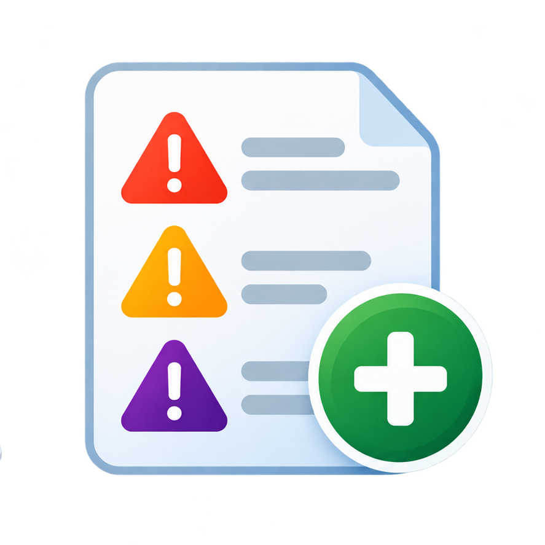

¿Qué son los peligros?
Los peligros son consecuencias o efectos no deseados potenciales que pueden surgir de las políticas de transición verde y digital, afectando a personas, comunidades y lugares.
 Muy relevante para su región
Muy relevante para su región
No hay peligros regionales disponibles.

Peligros adicionalesNo hay peligros adicionales disponibles.

¿Por qué es importante?
Entender estos peligros ayuda a diseñar políticas más justas e inclusivas que aseguren que los beneficios de la transición verde y digital sean compartidos por todos.